Misi Hari Ini
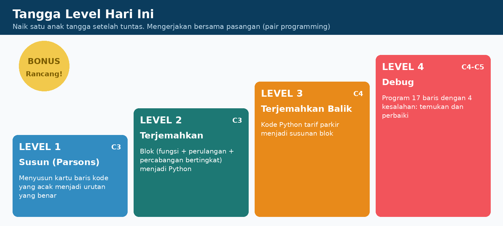
Kerja berdua: driver dan navigator
Driver menulis kode; navigator membaca kamus dan memeriksa tanda baca. Tukar peran setiap ganti level.
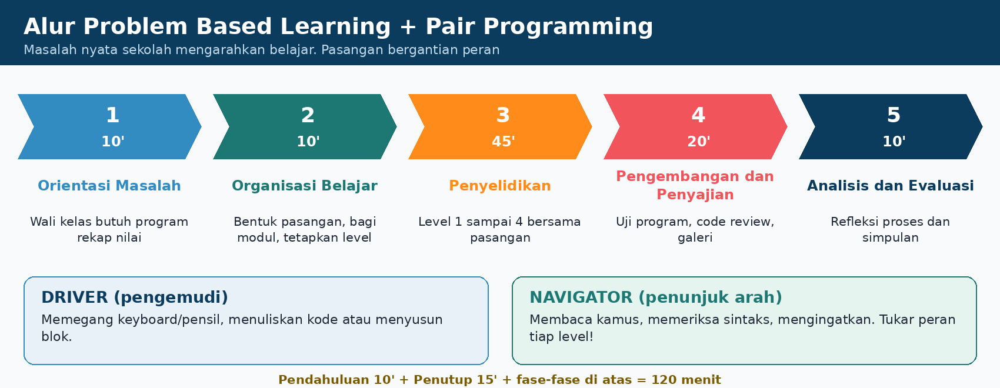
Pecah masalahnya
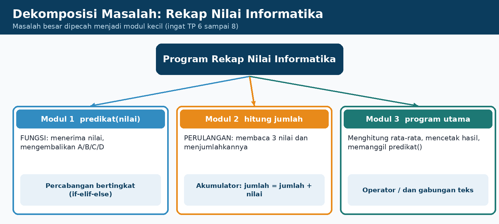
Predikat: rata-rata 90 ke atas = A, 80 sampai kurang dari 90 = B, 70 sampai kurang dari 80 = C, selain itu D.
1. Kotak Referensi
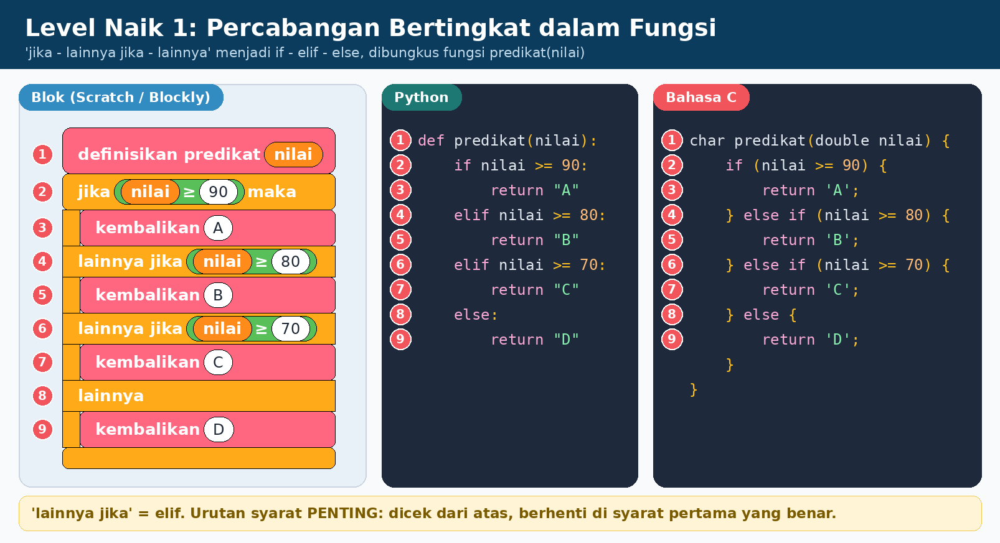
lainnya jikamenjadielif.- Diperiksa dari atas ke bawah, berhenti di syarat pertama yang benar. Urutan penting!
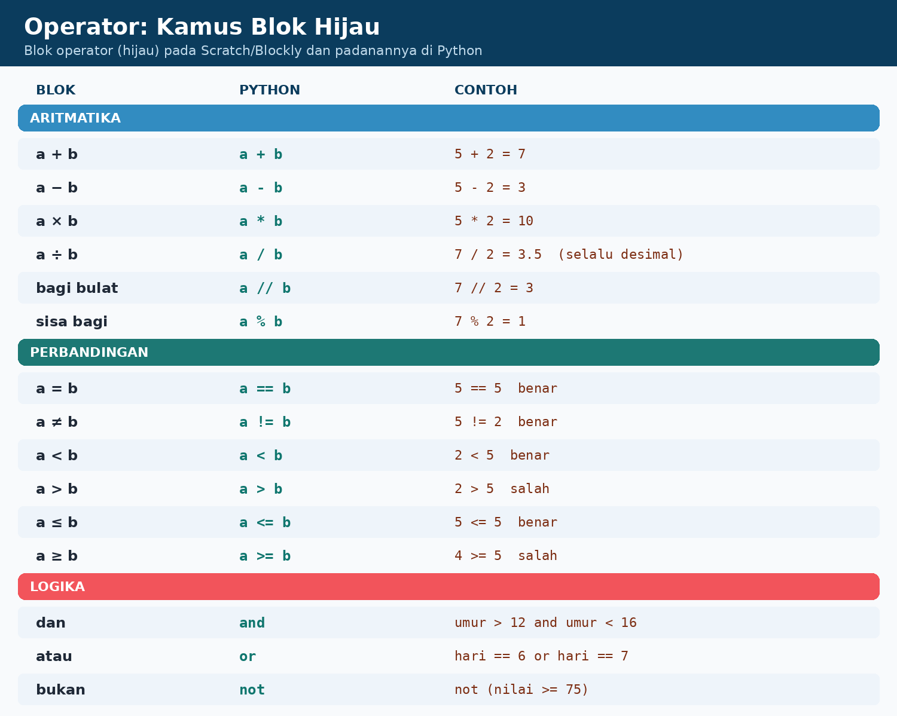
=mengisi,==membandingkan./desimal,//bulat,%sisa.
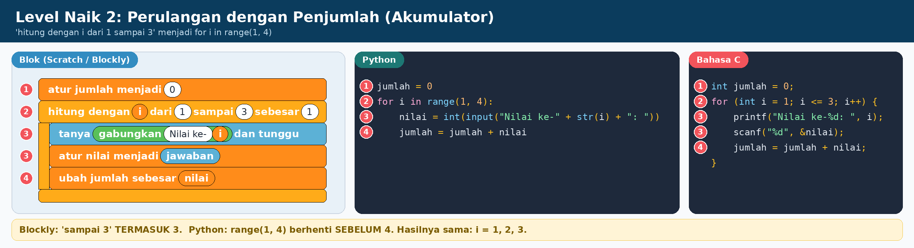
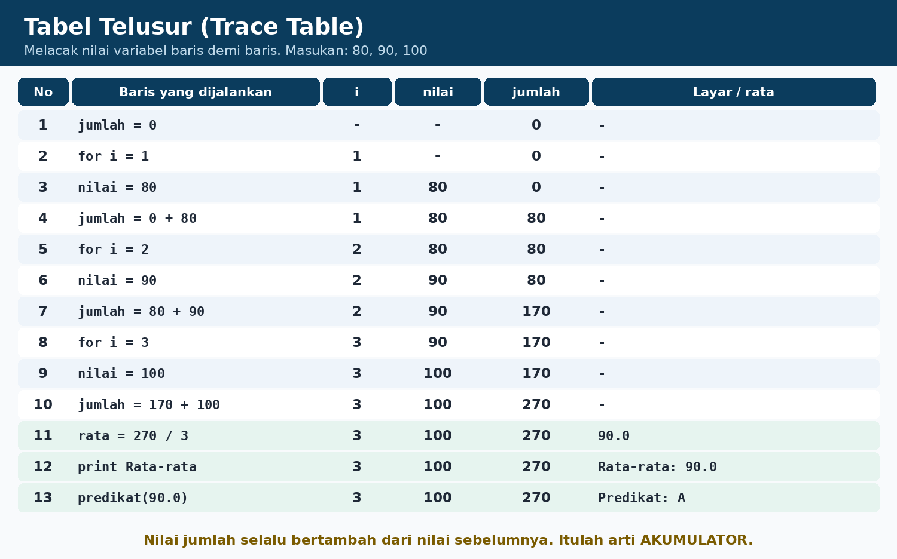
Seperti celengan: mulai dari nol di luar perulangan, lalu tambahkan tiap putaran.
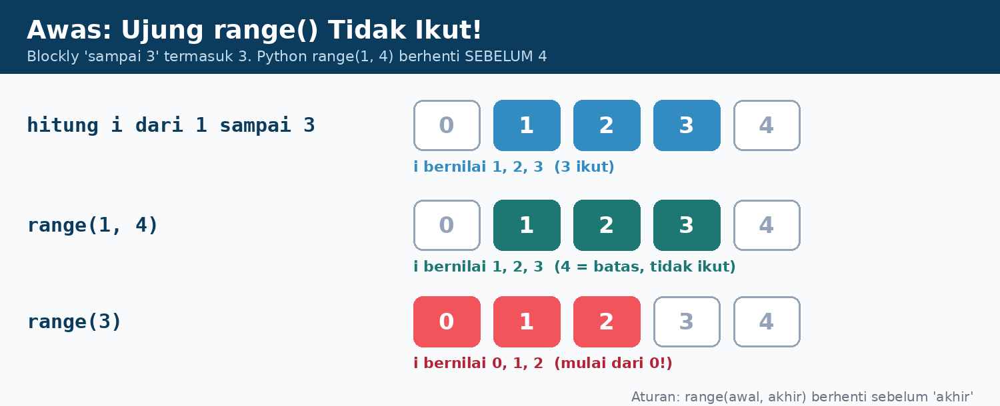
range(1, 4) berhenti sebelum 4. range(3) = 0, 1, 2.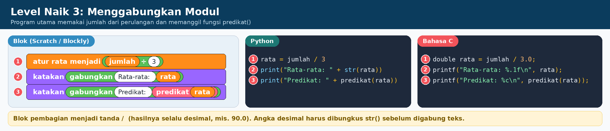
- Python membaca definisi fungsi lebih dulu; dijalankan saat dipanggil.
returnmembawa jawaban pulang.
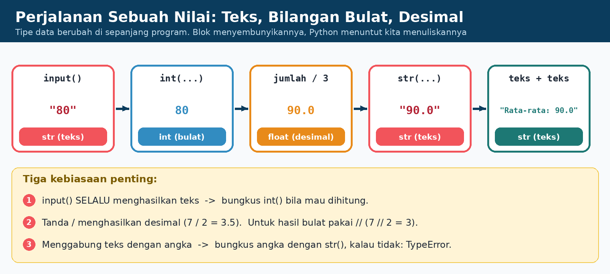
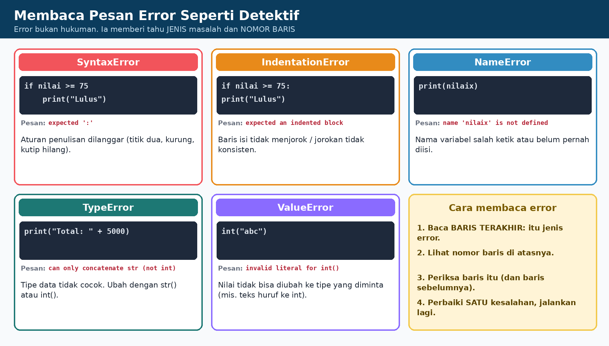
2. Laboratorium Coba-coba
A. Penjelajah Predikat: urutan syarat itu penting!
Masukkan rata-rata, pilih urutan syarat, lihat cabang mana yang dicek.
B. Kalkulator operator
| Python | Hasil | Tipe |
|---|---|---|
a / b | ||
a // b | ||
a % b | ||
a == b | bool |
C. Jalankan Rekap Nilai langkah demi langkah
3. Level Tantangan
Level 1: Susun kartu (Parsons)
Klik kartu di kiri untuk memindahkannya ke susunanmu (urut dari atas). Klik kartu di susunan untuk mengembalikannya.
Level 2: Terjemahkan blok ke Python
Terjemahkan program berikut di LKPD/editor Python, lalu bandingkan dengan simulator di atas (masukan 80, 90, 100).
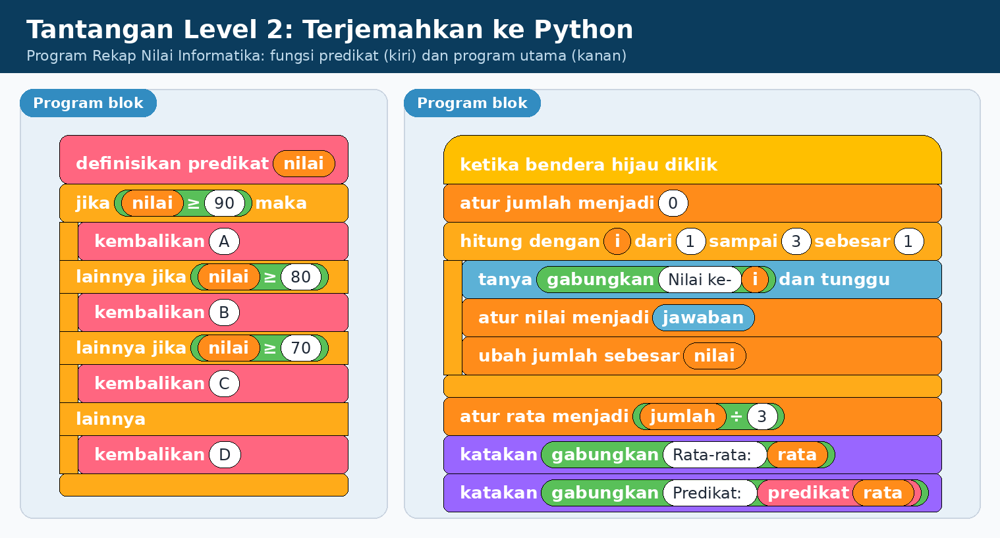
Level 3: Terjemahkan balik (teks ke blok)
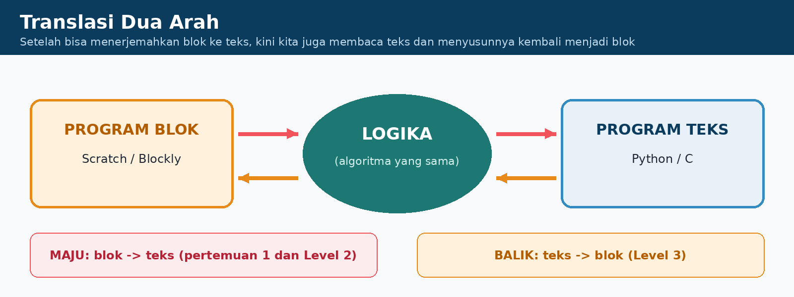
jam = int(input("Lama parkir (jam)? "))
if jam <= 1:
biaya = 2000
elif jam <= 5:
biaya = 2000 + (jam - 1) * 1000
else:
biaya = 6000
print("Biaya parkir: Rp " + str(biaya))
Susun blok setaranya di kertas/Blockly. Sudah? Klik untuk melihat kunci:
Level 4: Detektif Bug
Program ini punya 4 kesalahan. Klik baris yang salah. Kesalahan yang ditemukan akan hilang dari daftar target.